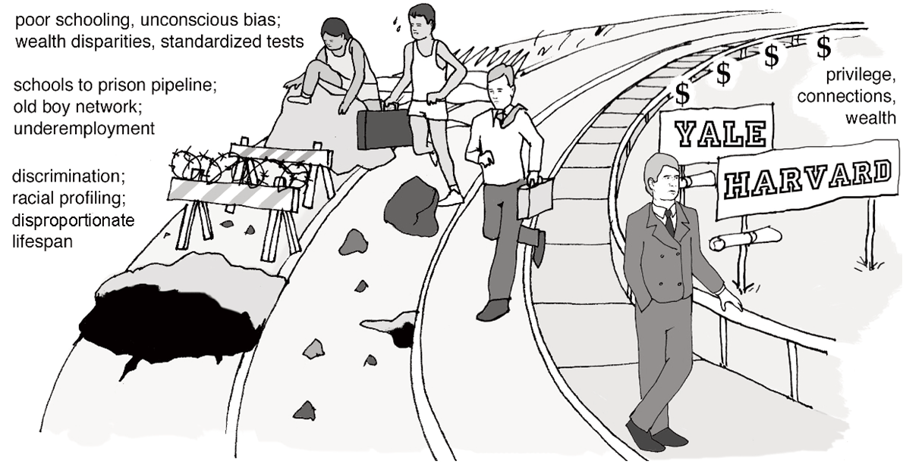

According to Wikipedia, Sterotype Threat is defined as the experience of anxiety in a situation in which a person has the potential to confirm a negative stereotype about his or her social group.
So what does this really mean. Most people in their daily life experience some form of stereotypes several times a day. This can be for any number of reasons including, but limited to, race, gender, culture, country, age, academics, geographical location, etc. Many of these, if not all, are a byproduct of societies output views regarding various situations related to these stereotypes. For example, you may or may not be aware of a stereotype related to women not being as good at math as men are. In the illustration below, some people may be familiar with this type of situation in which the individual, when a man, is critiqued for their personal limitations or skills its associated to that specific individual. Conversely, however, when that individual is a woman, they are unfairly placed under the label "all women are bad at math."
Objectively, the is a very unreasonable viewpoint to have and doesn't even seem to be logical. However, being that we are only begun to move away from a male dominated world in which women are seen as more equal in the eyes of society, it understandable how this sort of situation takes place.
Another problem in dealing with situations such as the one I just described, is that there are many stereotype threats that individuals don't recognize or are unaware of about themselves. Studies done by various experimental groups, but more specifically Claude Steele, shows that there are many psychological and physiological triggers that can be seen when these threat cues are present. However, in social situations, such as the taking of a math test with men and women, and when are directly questioned about these threat cues, in almost every instance the individual says that there are none. I find this very interesting as this relates to another topic that I've researched and discussed before, mindfulness. Being in tune with what one's body is saying can have a significant affect on ones abilities, performance and self perception. Being mindful can also help an individual identify when others might be affected by stereotype threats and make steps, if they so choose, to diminish those threats.
Something that I think people may or may not realize, is how much these stereotype threats can affect our lives. An obvious example of this might be something related to race. For example, if there was a black child that was taught that you can't ever trust white people and that child predominantly grew up in a black community, as a adults that might never place themselves in a situation where they even have the opportunity to get to know another white person. This has a significant effect on some many aspects of that child's life from social relationships, romantic relationships, career opportunities, career advancement and even you're children's life opportunities that you'll allow them have. These stereotype threats established by society and associated with various identity groups, creates barriers for individuals within these identity groups.
But what can we do about it?
Remedy for Stereotype Threat: Identity Safety - Removal of Threat Cues
In the end, the only way to move away from or completely diminish stereotype threats is to have a sense of identify safety by providing a way to remove or overcome threat cues. There are several suggested ways to approach these types of situations and remedy them. One that particularly sticks to me is leadership that emphasizes diversity. When individuals in positions of leadership place a significant amount of value on diversity, whether it be race, culture, gender, etc., they can change the norms and sensibility of a team or institution. This has a dramatic affect on the individual members' progression and performance within those teams/institutions. From my perspective, good leaders doing and saying the right things to encourage and empower others can almost be applied to any situation. But, I'm not saying it would be a perfect practice to follow. Trust between various conflicting identity groups is a real problem and a difficult barrier to overcome but its something that has and will continue to be overcome.